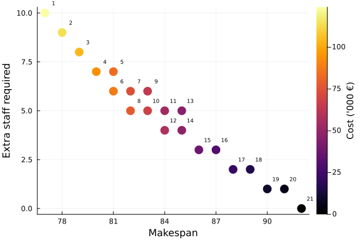
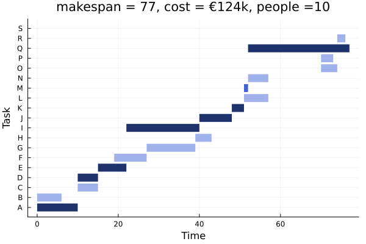
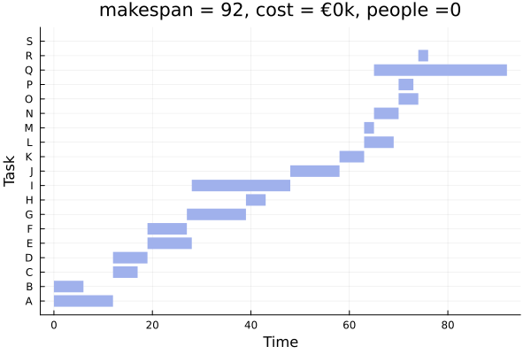
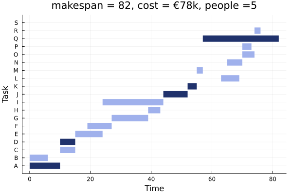

Multi-objective project planning
This tutorial was generated using Literate.jl. Download the source as a .jl file.
This tutorial was originally contributed by Xavier Gandibleux. It was adapted from an example created by Begoña Vitoriano from the Universidad Complutense de Madrid and originally presented at the EURO PhD School on multicriteria decision making with mathematical programming, held February 17-28, 2014 in Madrid.
This tutorial solves a project-planning problem with three competing objectives —minimising makespan, cost, and labour—as a multi-objective integer program. It shows how to visualise the Pareto frontier and individual Gantt-chart schedules to support decision-making.
Learning intentions:
- Model a project schedule with task-start-time variables, acceleration decisions, and precedence constraints in a multi-objective integer program
- Enumerate non-dominated solutions across three competing objectives— makespan, cost, and labour—using
MultiObjectiveAlgorithms.jl - Plot the objective space and Gantt-chart schedules to communicate trade-offs and support a decision maker in choosing a preferred plan
Required packages
This tutorial uses the following packages:
using JuMPimport CSVimport DataFramesimport HiGHSimport MultiObjectiveAlgorithms as MOAimport Plotsimport TestBackground
This tutorial investigates the problem of project planning. To complete the project, a number of tasks need to be completed in some precedence order. Each task requires a different amount of resources, for example time, money, and labor. The optimal schedule depends on the objective function. Do we want to minimize the makespan (the time to complete the project)? Or do we want to complete the project while minimizing the cost to complete it? Instead of choosing a single objective function, this tutorial solves a project planning problem as a multi-objective optimization problem in which we minimize the three objectives of time, cost, and labor units. Then, the decision maker can select a schedule from the set of possible solutions that best trades off the three objectives according to their personal preferences.
Data
We study how to optimize the project schedule for building a house. There are many tasks that need to be completed to build the house. Each task has a given duration and a number staff required to perform it. Some tasks can be accelerated (for a fixed cost per day) by hiring 20% more people (rounding up). Tasks have a precedence order. Here's the data we're going to use:
filename = joinpath(@__DIR__, "multi_objective_project_planning.csv")tasks = CSV.read(filename, DataFrames.DataFrame)| Row | task | description | duration | staff | max_accelerate | cost_accelerate | precedes |
|---|---|---|---|---|---|---|---|
| String1 | String | Int64 | Int64 | Int64 | Int64 | String7 | |
| 1 | A | Purchase of land | 12 | 2 | 2 | 6000 | C,D |
| 2 | B | Building plans and plot | 6 | 4 | 2 | 6000 | C,D |
| 3 | C | Municipal approval to build | 5 | 0 | 2 | 6000 | E,F |
| 4 | D | Financing | 7 | 2 | 2 | 8000 | E,F |
| 5 | E | Foundations | 9 | 10 | 2 | 8000 | I |
| 6 | F | Sewer trenching | 8 | 5 | 2 | 8000 | G |
| 7 | G | Put sewers | 12 | 5 | 2 | 6000 | H |
| 8 | H | Fill trenches | 4 | 5 | 2 | 12000 | L,P |
| 9 | I | Construction of the structure | 20 | 10 | 2 | 10000 | J |
| 10 | J | Coverage | 10 | 5 | 2 | 10000 | K |
| 11 | K | Other internal walls | 5 | 5 | 2 | 10000 | L,M |
| 12 | L | Electrical Installation | 6 | 5 | 2 | 12000 | O,P |
| 13 | M | Building drains sewer connection | 2 | 5 | 1 | 10000 | N,O,P,Q |
| 14 | N | Plumbing installation | 5 | 5 | 2 | 5000 | O,P |
| 15 | O | Floor | 4 | 10 | 2 | 5000 | R |
| 16 | P | Painting | 3 | 5 | 2 | 12000 | R |
| 17 | Q | External Paving and landscaping | 27 | 5 | 2 | 5000 | S |
| 18 | R | Certificate of occupancy | 2 | 0 | 1 | 10000 | S |
| 19 | S | Project complete | 0 | 0 | 0 | 0 |
JuMP formulation
We can build a JuMP model to optimize the project plan.
model = Model();The first decision variable is when tasks start. We can compute an upper bound for starting any task by summing the total duration of all tasks.
start_ub = sum(tasks.duration)@variable(model, 0 <= x_start_time[tasks.task] <= start_ub, Int);A second decision is to decide how many days to accelerate each task:
@variable(model, x_accelerate[tasks.task] >= 0, Int);We need a corresponding binary variable to track if a task is accelerated:
@variable(model, z_accelerate[tasks.task], Bin);and a constraint to link x_accelerate to z_accelerate:
@constraint( model, [r in eachrow(tasks)], x_accelerate[r.task] <= r.max_accelerate * z_accelerate[r.task],);There are three objectives: makespan, acceleration cost, and the number of extra staff required.
The makespan is the start time of the "Project complete" task:
@expression(model, obj_time, x_start_time["S"]);The cost is the cost per day of accelerating a task:
@expression( model, obj_cost, sum(r.cost_accelerate * x_accelerate[r.task] for r in eachrow(tasks)),);The number of extra staff is the 20% increase in staff if a task is accelerated:
@expression( model, obj_people, sum( ceil(Int, 0.2 * r.staff) * z_accelerate[r.task] for r in eachrow(tasks) ));Our full objective is therefore:
@objective(model, Min, [obj_time, obj_cost, obj_people])3-element Vector{AffExpr}:
x_start_time[S]
6000 x_accelerate[A] + 6000 x_accelerate[B] + 6000 x_accelerate[C] + 8000 x_accelerate[D] + 8000 x_accelerate[E] + 8000 x_accelerate[F] + 6000 x_accelerate[G] + 12000 x_accelerate[H] + 10000 x_accelerate[I] + 10000 x_accelerate[J] + 10000 x_accelerate[K] + 12000 x_accelerate[L] + 10000 x_accelerate[M] + 5000 x_accelerate[N] + 5000 x_accelerate[O] + 12000 x_accelerate[P] + 5000 x_accelerate[Q] + 10000 x_accelerate[R]
z_accelerate[A] + z_accelerate[B] + z_accelerate[D] + 2 z_accelerate[E] + z_accelerate[F] + z_accelerate[G] + z_accelerate[H] + 2 z_accelerate[I] + z_accelerate[J] + z_accelerate[K] + z_accelerate[L] + z_accelerate[M] + z_accelerate[N] + 2 z_accelerate[O] + z_accelerate[P] + z_accelerate[Q]For the constraints, the start time of a task must be after any required preceding tasks have finished:
for r in eachrow(tasks) for dependent_task in split(r.precedes, ","; keepempty = false) @constraint( model, x_start_time[dependent_task] >= x_start_time[r.task] + r.duration - x_accelerate[r.task] ) endendSolution
Now we have built our model, we can solve it using MOA:
set_optimizer(model, () -> MOA.Optimizer(HiGHS.Optimizer))set_attribute(model, MOA.Algorithm(), MOA.KirlikSayin())optimize!(model)-----------------------------------------------------------
MultiObjectiveAlgorithms.jl
-----------------------------------------------------------
Algorithm: KirlikSayin
-----------------------------------------------------------
solve # Obj. 1 Obj. 2 Obj. 3 Time
-----------------------------------------------------------
1 7.70000e+01 2.56000e+05 1.90000e+01 1.01441e+00
2 1.47000e+02 2.46000e+05 1.80000e+01 1.01509e+00
3 1.47000e+02 0.00000e+00 1.80000e+01 1.01577e+00
4 1.47000e+02 2.78000e+05 1.90000e+01 1.01640e+00
5 1.47000e+02 1.20000e+04 0.00000e+00 1.01705e+00
6 1.47000e+02 2.46000e+05 1.90000e+01 1.01767e+00
8 7.70000e+01 1.24000e+05 1.00000e+01 1.03997e+00
10 7.80000e+01 1.14000e+05 9.00000e+00 1.04686e+00
12 7.90000e+01 1.04000e+05 8.00000e+00 1.05468e+00
14 7.80000e+01 1.14000e+05 9.00000e+00 1.06157e+00
16 7.90000e+01 1.04000e+05 8.00000e+00 1.07565e+00
18 8.00000e+01 9.40000e+04 7.00000e+00 1.08636e+00
20 8.00000e+01 9.40000e+04 7.00000e+00 1.09441e+00
22 8.10000e+01 8.80000e+04 6.00000e+00 1.10428e+00
24 8.10000e+01 8.40000e+04 7.00000e+00 1.11302e+00
26 8.20000e+01 7.40000e+04 6.00000e+00 1.12477e+00
28 8.20000e+01 7.80000e+04 5.00000e+00 1.13234e+00
30 8.30000e+01 6.40000e+04 6.00000e+00 1.14856e+00
32 8.40000e+01 5.80000e+04 4.00000e+00 1.16746e+00
34 8.40000e+01 5.40000e+04 5.00000e+00 1.17881e+00
36 8.60000e+01 3.80000e+04 3.00000e+00 1.18888e+00
38 8.50000e+01 4.60000e+04 5.00000e+00 1.19864e+00
40 8.60000e+01 3.80000e+04 3.00000e+00 1.20391e+00
42 8.80000e+01 2.20000e+04 2.00000e+00 1.21835e+00
44 8.70000e+01 3.00000e+04 3.00000e+00 1.22625e+00
46 8.20000e+01 7.40000e+04 6.00000e+00 1.23744e+00
48 8.80000e+01 2.20000e+04 2.00000e+00 1.24361e+00
50 9.00000e+01 1.00000e+04 1.00000e+00 1.24884e+00
52 8.30000e+01 6.80000e+04 5.00000e+00 1.26140e+00
54 8.90000e+01 1.60000e+04 2.00000e+00 1.26784e+00
56 8.40000e+01 5.40000e+04 5.00000e+00 1.28373e+00
58 9.00000e+01 1.00000e+04 1.00000e+00 1.29147e+00
60 8.50000e+01 4.80000e+04 4.00000e+00 1.30084e+00
62 9.20000e+01 0.00000e+00 0.00000e+00 1.30184e+00
64 8.60000e+01 3.80000e+04 3.00000e+00 1.32026e+00
66 9.10000e+01 5.00000e+03 1.00000e+00 1.32914e+00
68 9.20000e+01 0.00000e+00 0.00000e+00 1.33013e+00
-----------------------------------------------------------
termination_status: OPTIMAL
result_count: 21
Total solve time: 1.33023e+00
Time spent in subproblems: 2.88597e-01 (22%)
Number of subproblems: 68
-----------------------------------------------------------The algorithm found 21 non-dominated solutions:
Test.@test result_count(model) == 21solution_summary(model)solution_summary(; result = 1, verbose = false)
├ solver_name : MOA[algorithm=MultiObjectiveAlgorithms.KirlikSayin, optimizer=HiGHS]
├ Termination
│ ├ termination_status : OPTIMAL
│ ├ result_count : 21
│ ├ raw_status : Solve complete. Found 21 solution(s)
│ └ objective_bound : [7.70000e+01,0.00000e+00,0.00000e+00]
├ Solution (result = 1)
│ ├ primal_status : FEASIBLE_POINT
│ ├ dual_status : NO_SOLUTION
│ └ objective_value : [7.70000e+01,1.24000e+05,1.00000e+01]
└ Work counters
└ solve_time (sec) : 1.33023e+00The objective_bound is the ideal point, that is, a lower bound on each objective when solved independently.
objective_bound(model)3-element Vector{Float64}:
77.0
0.0
0.0In the ideal case, we cannot do better than a makespan of 77, paying $0 in extra cost, and employing zero extra staff. In reality, we cannot achieve this ideal outcome, and we need to trade-off the three objectives against each other.
Here's a way to plot their relative trade-offs in objective space. Each point is a separate solution, numbered by their result index.
plt = Plots.scatter( [value(obj_time; result) for result in 1:result_count(model)], [value(obj_people; result) for result in 1:result_count(model)]; marker_z = [ value(obj_cost; result) / 1_000 for result in 1:result_count(model) ], xlabel = "Makespan", ylabel = "Extra staff required", colorbar_title = "Cost ('000 €)", label = nothing, markersize = 8, markerstrokewidth = 0,)for i in 1:result_count(model) obj = objective_value(model; result = i) Plots.annotate!(plt, obj[1]+0.5, obj[3]+0.5, (i, 6))endplt
If we decrease the extra staff required, the makespan increases. Additionally, there are some solutions where we can keep the same makespan, but increase the number of staff for a reduction in cost. These solutions arise because we are accelerating cheaper tasks instead of more expensive ones.
Here's a function to visualize the schedule of a given solution. It's not important to understand the details of the plotting function.
function plot_solution(; result::Int) shape(; x, y, w) = Plots.Shape(x .+ [0, w, w, 0], y .+ [0.1, 0.1, 0.9, 0.9]) shapes = [ shape(; x = value(x_start_time[r.task]; result), y = i, w = r.duration - value(x_accelerate[r.task]; result), ) for (i, r) in enumerate(eachrow(tasks)) ] accelerate_color = Dict(0 => "#a0b1ec", 1 => "#4063d8", 2 => "#20326c") colors = map(eachrow(tasks)) do r return accelerate_color[round(Int, value(x_accelerate[r.task]; result))] end obj = round.(Int, objective_value(model; result)) obj[2] /= 1_000 return Plots.plot( shapes; color = permutedims(colors), linewidth = 0, legend = false, title = "makespan = $(obj[1]), cost = €$(obj[2])k, people =$(obj[3])", xlabel = "Time", ylabel = "Task", yticks = (1.5:19.5, 'A':'S'), )endplot_solution (generic function with 1 method)The solution with the shortest makespan is:
plot_solution(; result = 1)
The darkest bars are tasks that are accelerated by two days. The lightest bars are not accelerated.
The solution with the longest makespan is:
plot_solution(; result = 21)
No tasks are accelerated.
There are a variety of solutions in between these extremes. One example is:
plot_solution(; result = 8)